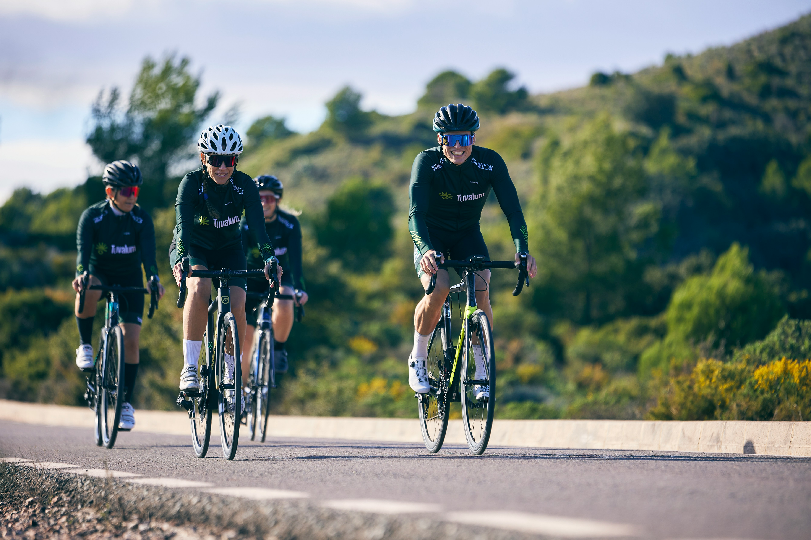

Bike Scotland
Looking for an environmental friendly way of getting to work with European chic? Don’t want to buy lycra and a gel saddle? Then look no further than our replica Dutch road bikes. Suitable for all types of green commuters who don’t want to break the sound barrier our road bikes start at only £ 150.
One of our bikes


Home